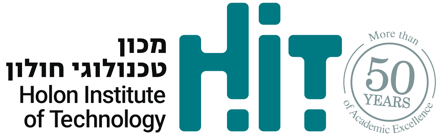

אודות
על האתר
TWIST מיועד למתחילים שרוצים להכין קוקטיילים בבית. האתר מסביר את הכמויות, הכלים ושלבי ההכנה של שלושה מתכונים קלאסיים.
לצד המתכונים תמצאו מדריך לציוד ולמרכיבים, הסברים על טכניקות ומילון מונחים. רשימת המרכיבים בכל מתכון מוצגת כפתק שאפשר לחזור אליו בזמן ההכנה.
פותח על ידי גל נילי ועינב חג׳ג׳
Gal Nili & Einav Hagag
במסגרת פרויקט לקורס ״פיתוח אתרי אינטרנט״ בשנה א׳, תשפ״ו, בפקולטה לטכנולוגיות למידה ב־HIT מכון טכנולוגי חולון.
האתר אופיין ועוצב לפי עקרונות של עיצוב ממשק ופותח ב־HTML5 ו־CSS3 תוך התחשבות בעקרונות נגישות אתרים: מבנה כותרות, טקסט חי, תיאורי תמונות וניווט ברור.

כתב היד במתכונים
רשימות המרכיבים מוצגות בגופן המבוסס על כתב ידו של סמ״ר יחזקאל חיזגיל רזילוב ז״ל, ממיזם אות.חיים. המיזם יוצר גופנים מכתב ידם של הנרצחים והנופלים במלחמת חרבות ברזל, בחיבור עם המשפחות השכולות ולהנצחת זכר יקיריהן.
עיצוב הגופן: עטרה גבריאלי. הגופן משמש כאן לטקסט המרכיבים בלבד; המתכונים והתוכן באתר נכתבו עבור הפרויקט ואינם כתבים אישיים שלו.
לעמוד ההנצחה במיזם אות.חייםהעמודים שפיתחנו
מקורות וקרדיטים
כמויות המתכונים ושיטות ההכנה מבוססות על איגוד הברמנים הבינלאומי, IBA. מדריכי הציוד והטכניקות נעזרים ב־Campari Academy. מקורות מדויקים מופיעים גם בעמודי התוכן.
צילומי הקוקטיילים והציוד ומרקם הנייר נוצרו בבינה מלאכותית לצורך הפרויקט. הגופן הראשי הוא Assistant; כתב היד הוא גופן אות.חיים. לוגו HIT לקוח מאתר המכון. הסרטון בעמוד הטכניקות מוטמע מ־YouTube ומקושר במתכון המוחיטו באתר IBA.